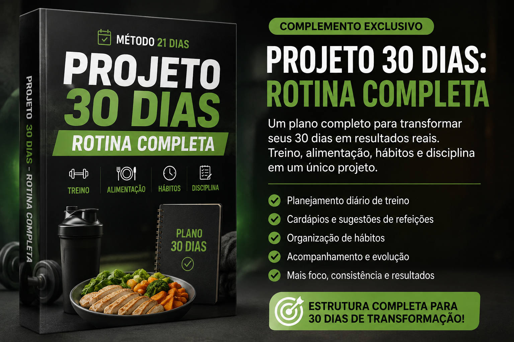
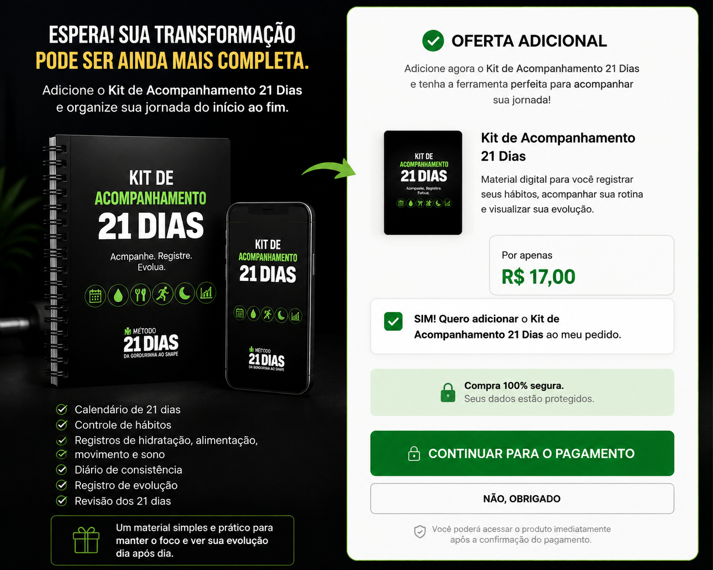

Menos improviso. Mais clareza para executar.
O Método 21 Dias reúne uma sequência organizada de materiais para você acompanhar hábitos, alimentação, movimento e rotina ao longo da jornada.
Saiba o que fazer
Comece com uma estrutura clara para organizar seus primeiros dias e registrar sua rotina.
Crie consistência
Use checklists e registros para transformar pequenas ações em um acompanhamento diário.
Não pare no dia 21
Finalize o ciclo com uma visão do que funcionou e use o material de continuidade para seguir.
Um caminho simples para acompanhar seus 21 dias.
Você não precisa tentar mudar tudo de uma vez. A proposta é acompanhar o processo por etapas.
Organizar
Prepare sua rotina, defina seu ponto de partida e comece o acompanhamento.
Construir
Mantenha a sequência de ações e use os registros para visualizar sua evolução.
Consolidar
Feche o ciclo, revise sua jornada e prepare os próximos passos.
Tudo organizado em uma única jornada.
Plano de 21 dias, checklists, registro de hábitos, guia de organização alimentar, movimento e rotina.
E ainda: Desafio Extra de 7 Dias + Planner de continuidade.
O objetivo é facilitar o acompanhamento e ajudar você a manter uma rotina mais organizada durante o processo.
Método 21 Dias
Comece sua jornada hoje.
QUERO O MÉTODO →Você será direcionado ao checkout oficial.Feito para quem quer parar de adiar e começar com organização.
Ideal para quem busca uma estrutura simples para acompanhar hábitos, rotina e evolução ao longo de 21 dias.
Está começando
Quer um ponto de partida organizado em vez de depender de motivação todos os dias.
Perde o ritmo
Começa bem, mas sente dificuldade em manter uma sequência e acompanhar o próprio progresso.
Quer continuidade
Procura uma forma de registrar a jornada e continuar depois do ciclo inicial.
Quer ir além dos 21 dias?
Conheça complementos digitais para aprofundar organização, consistência e acompanhamento.

ADICIONAL 01PROJETO 30 DIAS: ROTINA COMPLETA
Complemento • R$37Para quem quer prolongar o trabalho de organização da rotina depois da jornada principal.
ADICIONAR À MINHA JORNADA →Checkout seguro pela Kiwify ADICIONAL 02
ADICIONAL 02DESAFIO 30 DIAS DE CONSISTÊNCIA
Complemento • R$27Para quem quer continuar praticando consistência e acompanhamento após os 21 dias.
QUERO ESTE COMPLEMENTO →Checkout seguro pela Kiwify
ADICIONAL 03KIT DE ACOMPANHAMENTO — 21 DIAS
Complemento • R$17Um material complementar para apoiar registros e acompanhamento durante os 21 dias.
ADICIONAR À MINHA JORNADA →Checkout seguro pela KiwifyUma estrutura, não uma promessa de resultado.
O método não promete um resultado específico. Cada pessoa responde de forma diferente às mudanças de rotina, alimentação e atividade. O conteúdo é educativo e de organização pessoal e não substitui orientação profissional de saúde.
Perguntas frequentes
Como recebo o Método 21 Dias?
Após a compra, o acesso e as instruções de entrega são apresentados pela Kiwify.
O que está incluído?
Plano de 21 dias, checklists, registros de hábitos, organização alimentar, movimento e rotina, além do Desafio Extra de 7 Dias e do Planner de continuidade.
Qual é o investimento?
A oferta apresentada nesta página é de R$67, com valor de referência de R$220.
Preciso fazer tudo perfeitamente?
Não. A proposta é acompanhar sua jornada com mais organização e constância, respeitando sua realidade e seu ritmo.
Você já sabe que quer começar. Agora falta organizar o primeiro passo.
Acesse o Método 21 Dias e comece sua jornada com uma estrutura pronta para acompanhar os próximos 21 dias.
QUERO COMEÇAR AGORA →